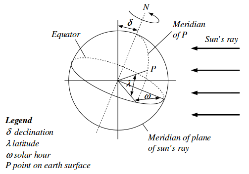

User's Guide
This package contains models to read or compute boundary conditions, such as weather data, solar irradition and sky temperatures. The calculations follow the description in Wetter (2004), Appendix A.4.2.
To compute the solar irradiation, parameters such as the surface azimuth and the surface tilt are defined as shown in the following three figures.

For the surface azimuth and tilt, the enumerations Buildings.HeatTransfer.Types.Azimuth and Buildings.HeatTransfer.Types.Tilt can be used.
Extends from Modelica.Icons.Information (Icon for general information packages).